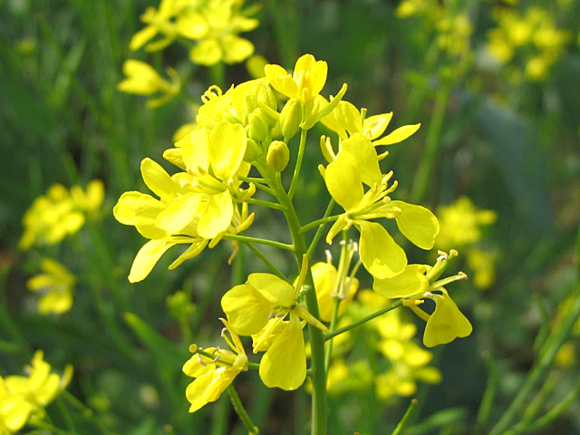

| Home |
| MUSTARD |
| 1. Mustard aphid |
| 2. painted bug |
| 3. mustard sawfly |
| 4. green peach aphid |
| 5. pea leaf-Miner |
| 6. Bihar hairy caterpiller |
| 7. Cabbage butterfly |
| 8. diamondback moth |
| questions |
| Download Notes |
PESTS OF MUSTARD (Brassica)
The important cruciferous oilseeds cultivated in India are yellow and brown sarson (Brassica campestris var. sarson), toria (B.campestris var. toria), raya (B. juncea) and taramira (Eruca sativa). These crops are damaged by a number of pests, of which mustard aphid, mustard sawfly and the painted bug are more serious. The aphid is the most serious pest on Brassica oilseeds throughout India.
